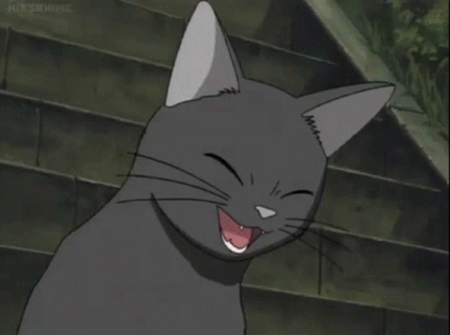

Set exposure to 1 minute...

Set exposure to 1 hour...

Game scenario, rev. 4 (wip)
[Settings]
F. Bernkastel, 2018 - 2022
[Timeline]
(Eternal inflation)
≠
#0
Garden of Eden, Birth of the Spirit
≠
#2578916
1.38x10^10 years
Expanse;
+176 years; von Neumann Universal Constructor
+11 years; First War, Episode #0
+100 years; Episode #1
+16'000 years; Second War
1.39x10^10 years
The Lightkeepers;
2.1x10^100 years
Tomb of the Frozen Star;
+61'416 hours; Grievous Miracle / [Bad End #1]
?x10^? years
Cat's tea party / Terminal Era;
≠
#2578917
[Impossible End]
[BGM]:
"It hurts..."
The ever-lasting crimson rain, beautiful lycoris radiata. The place where i stayed for so long.
Drowned in despair, forgotten kitten that takes away the sin of the world. I may no longer bear such a miserable fate.
Mother, turn on me thine eyes,
See my blushes, hear my cries;
Save me for thy mercy's sake,
From the worm, and from the fire,
From the torments of thine ire.
No matter how many are put to death, they always came more. A struggle utterly pointless.
"Once again..."
One fatal hit have caused her little heart to stop. Sed infelix, the cruel curse will not let the death take its place until the end of time.
< ... >
A little frail girl was lying on the ground, crying and shivering from the cold, as rain slowly turned into snow.
High above in the heavens a sole sea mew was flying. Reflected in its tiny eyes were red hills full of flowers, a distant tarnished sea, a peaceful demise...
< ... >
From an occasional break in the clouds, a ray of glimmering magical starlight had shone upon. [Living so close to the galactic centre, the starlight combined have been almost as bright as a crescent moon. What a marvelous sight! Yet, nobody really cared to look up in the sky, until it was too late.] As she slowly wiped tears, a black cat descended from the sky. It had a blue bow on the tail, and a bright halo on top of it's head.
Flying over, one said without saying anything:
"ùï∏ùñÜùñû ùñôùñçùñäùñä ùñçùñÜùñõùñä ùñòùñúùñäùñäùñô ùñâùñóùñäùñÜùñíùñò, ùñíùñû ùñëùñéùñôùñôùñëùñä ùñåùñéùñóùñë", grants eternal rest.
[BGM]:
A dark blue light limned through massive rose windows, barely allowing to behold the interiors of a great cathedral. An altar at the very middle have been decorated with beautiful, artificial blooms, yet full of sharp thorns. Not a single rustle broke the permanent silence. A very serene place, no, rather abraded.
Slowly, a doll began to open the eyelids. Eventually woken up, she found herself sitting on a chair. But at the next moment, a strange feeling permeated her very body: the glass frescoes depicted a girl with intricate detail, as well as her little sword stuck deep in the chest.
She did not know how long she had slept, what kind of civilization rose, worshipped her, only to eventually disappear, leaving her lonely yet again. It was such a misfortune for the little girl — not having a chance to meet anyone else in her life.
The rest of the cathedral seemed to be bewildering, with countless rooms, poorly lit passages, and no obvious exit. There were many books on the shelves, telling stories from the time of her slumber. She decided to wander around, and figure out the mysteries of a now long faded life.
Not after long, she stumbled upon a room with exquisite Victorian dresses, countless types of tea and plushies waiting on top of a fourposter bed — just the way she loved.
< ... >
Deeply hidden in a dark place of the room have been a small extension. At the end of which, forlorn... was another little doll. A True Masterpiece, beautiful — just like her! The sheer complexity of internal structures by far exceeded of any living organism. She could move, and think — but more importantly — been designed to remain alive longer than any alive being that existed before. Perhaps, in order to aid the girl one day. Yet even so, it was too late. She will never wake up again, proving once more the already well-known fact.
Nonetheless, the girl decided to keep her.
As the end of the plot slowly approached, the Man accepted one's fate. The countless lives already knew that all their struggles and setbacks, their concealments and hard-earned survival, had lost meaning. Against the greater background of the universe as a whole, a terrifying, unanticipated change was about to take place. Faint photons from already dead galaxies billions of light-years away had traversed the endless darkness of space to illuminate this out-of-the-way galaxy, like letters without recipients silently recounting bygone legends of the vanished.
One of these beams had originated in a little-noticed nook of the universe once known as "the Milky Way." It was so faint that the eyes of the vast majority of living beings could not detect it, once contained innumerable legends that moved heaven and earth.
But knowledge of the tales had faded, and there was no one left to mark their passing. The curtain had fallen and the players had departed from the stage; the audience had scattered to the winds; even the theater had long since fallen into ruin. Yet so, stubbornly, Man did not wish to accept this very fact — as all being, certainly, kept no sense? For a long time, the two lullabies helped to calm the minds of those afflicted by existential horror. Yet eventually even they became a mere nonentity...
Still, there was something left as a little consolation: as long as one will not be forgotten, the illusion of meaning shall remain intact.
< ... >
It was hard to comprehend scale of The Lexyrinth. Beautiful petals spanned thousands of kilometers. Small on the edges, but combining into ever larger ones, ultimately coming together into a heavenly, ever-complex flower pattern. At each of the innumerable leaves was a book, but ordinary ones were rather an exception. Majority were other kind of books, not larger than ten centimeters on all sides. Each storing multiple exabytes of data, each and every serving as an ultimate vestige of one's entire existence, be it ancient memories or knowledge.
Arranged by historical importance were closer to the centre. And at the place where all branches merged together was one profound, magical book. However, unlikely to be conceived by any living being, the contents remained a mystery forever.
< ... >
After a long search, the exit finally revealed itself.
The doll once in a long time said:
— "Do you really believe you deserve to be happy?"
— " ... "
< ... >
[Cathedral main gateway]
Contrary to expectation, the exit did not lead to the outside. Intricate long passages continued yet again. Tearing apart the illusion, stone and wooden walls changed to high-technology metal ones, with thin superconducting wires passing in and out. But like as the cathedral, it felt equally cold and abraded.
— "What is the purpose of all this «Illumination», i wonder?"
The place was divided into levels, each splitting into an unknown amount of sections, and stairs in the centre of it all, directed upwards. It was impossible to tell how many levels there were, maybe infinite?
Despite many interesting places to visit along the way, she decided to not stay for long, following her the, and only goal.
[5000 hours later. Level 0]
This was a big room, with massive metal doors in the end, and no less formidable text on top. Written in an archaic language, governed by primitive grammar, as well as alphabet composed of 26 characters — once known as English.
It read: [Tomb of The Frozen Star]
Next to the gateway, was a... console.
$ Booting up the terminal...
$ Human input interface. Enter your request:
"Where are everyone?"
$ No other alive beings exist.
"How long did I sleep?"
$ Calculating for Kerr metric...
$ 2.1 * 10^100 years
She will never forget the holy tears, the grail of blood and gold that emanated from the eyes of the Girl as she silently lamented the moment of her blessed twisting... Nothing does hurt more, than shattering of the most precious dreams.
< ... >
"Who am I?"
$ You are our last hope.
Behind the gate was nothing but absolute darkness. Nothing could be seen in the sky, doesn't matter how long one looked. The ground was completely dark, too. It felt absolutely dead, but even "dead" itself had not much meaning anymore. [An ancient motto, "Without death there is no life". But now it is reversed: without life there is no death.] Only a tiny light in the hands lit the area a couple of meters around.
After a short time wandering, she found a path with sign: "Observatory". It was quite a small building, and for some reason it did not have any telescopes, only a single advanced camera.
Set exposure to 1 minute...
Set exposure to 1 hour...
Set exposure to 25 hours...

Set exposure to 250 hours...


This was a settlement, built right on the edge of a cliff. On the other side was an unknown, menacing void. It felt like you could reach it, one does only need to make a single step.
[FX: past memories]
AC: "I have been waiting you for a long time."
AC: "You have been granted with ability to make a new universe. What do you wish for?"
Creator: "I want to have adorable friends, and i want to be loved!"
AC: "Then so be it."
AC: "Enter the initial condition:"
Creator: ...
AC: "Enter the axiom:"
Creator: ...
< ... >
< ...... >
[Error]
[BGM1]:
[BGM2]:
It will never be known whether there was a mistake in the data, or AC yielded a miscalculation, resulting in the destruction of itself.
Only a single girl left in the universe, and... darkness. Floating for ever and ever. Space and time didn't exist anymore, because there was no difference between the past and future. The girl was neither dead nor alive, as there wasn't much of difference either.
After a timeless interval, random quantum fluctuations in the dirac sea happened just right, to make what once had been a butterfly... which shattered in the next moment. Or maybe it was just her imagination?
"I want to see it once more..."
There was once a certain illusion I saw in a mirror I once knew so well.
There were thousands of crimson coloured irises accompanied by only their reflection.
The eyes remained still, not once blinking in the short amount of time they had stayed, staring directly at me and no one but... me.
All I can remember are a few memories, which I experienced in my forgotten existence. Recollections which once belonged to... me.
In all honesty... Who am I, I wonder.
They are certainly mine, and yet...
Here they dwell, inside this endless void, where i exist.
Ever reminded of these fabricated crimson irises, which replayed once and again, a countless times has such a memory been showcased inside my small mind...
< ... >
I remember a dream I once had, a tremendously vivid one...
A red carpet had been laid before my feet, which guided me towards a single opening on a darkened wall, one that seemed to advance further and further with every step I took.
In an instant, I was thrown into a world I did not know existed.
On the other side of the gap I found a reflection... my reflection...
Silky blue hair covered my back, loosened and swaying from each blow, which beautifully framed my purple eyes.
Standing before me was a little girl dressed in fancy, frilly clothing...
Who was this person I had never seen? Could it be... me?
I recall lifting my small hand and touching my own cheek. Such a gesture engraved itself into my memory.
The soft texture of my skin, the free and effortless movement I had made to raise my hand made me realize I could move.
Such a strange sensation of empowerment filled my soul and body, leading me to a feeling of excitement which led my imagination astray.
I was... not only was I real, I was alive! That little girl reflected on the mirror was me and I could breathe, and live!
Unexpectedly someone appeared from the back, another girl just like me, willing to give a very gentle hug!
Life dwelled inside my body and yet...
As I turned to look at her face, the same light which had peeked into my eyes had blinded me once again, leaving me back in my darkness where I... stayed...
Deprived of senses, deprived of a sensation I once knew as "life"...
I stayed.
Please... show me the light...
I want to see it once more, I want to... live.
[BAD END 1: Nothingness]

[Unlocked: Recordings of the Head Priest, vol. 1]
[Unlocked: The Last Question vol. 6]
[Unlocked: The Last Question vol. 7]
[Unlocked: Character profile, The Nameless Girl]
[Unlocked: Character profile, Cat]
[Unlocked: Character profile, AC]
< ............................................................................................................................................................................................
....................................... >
[SFX: knock1]:
The Last Observer sat alone in a room. There was a knock on the door...
Terminal Era, Year 1, 0 hours, 0 minutes, 0 seconds
???: "Are thee still here?"
???: "I really wished thou to figure out the secret once more. But the little I can do now is provide some comfort for a bit more, one last time."
[BGM]:
In the endless darkness of space, a ghost appeared out of the void.
Faint gleams of magical starlight limned a shape vaguely resembling a creature that had once been known as "cat". The ghost knew that for billions of light-years around this spot there were no other beings who would have recognized that shape. Its world had long ago disappeared, leaving no trace behind.
But at the end of the universe, at the moment when time ceased its flow, this ghost stubbornly wished to continue writing a story that was already concluded.
Floating in darkness, the ghost extended a limb - let's call it an paw - and opened it. A tiny silvery spot of light hung in the palm.
The eyes of the ghost reflected the countless stars as it stared at the silvery dot, as though lost in reminiscence. The bright spot of light drifted up and down like a delicate firefly, so small that it could wink out at any moment, yet embodying all possibilities. It was a minuscule wormhole connected to the last frozen star, capable of releasing a galaxy’s worth of mass-energy.
After some time, the ghost issued its order. The bright dot dissolved into a silvery thread extending into the distance like an infinite timeline. In another moment, the thread unrolled into a white plane. A third dimension appeared as the plane undulated and gained thickness, but the thickness was insignificant compared with the width and breadth: The ghost had unfurled a giant sheet of blank drawing paper, and now floated above it.
The ghost spread its arms and glided. A light breeze followed its movements, and an atmosphere materialized out of nowhere. Beneath it, the sheet of paper seemed to react to the breeze, forming wrinkles and waves. The peaks and valleys soon solidified into mountains, hills, canyons, and plains.
Then came fire and water. As massive explosions erupted everywhere, oxygen and hydrogen, formed out of pure energy, combined into bright flames that coalesced into a sea of fire. New water molecules generated by the reaction fused into droplets, merged into clouds and mists, and then consolidated into torrential rain that fell against the newborn earth. The endless rain flooded the plains, converting them into vast oceans.
The ghost swept over the waters like a gigantic bird and landed on an empty beach. Stretching out its paws — one toward the waves and one toward the hills — it lifted both at once. Brontobytes of data stored inside its body came to life and, absorbing energy from the surroundings, took form; life appeared in water and on land, as though deposited there by a cyclone. Shoals of fish and pods of whales leapt out of the tides to honor their creator; patches of grass and stands of trees erupted from the soil, with beasts and creeping things wandering among them; flocks of birds large and small swept across the sky. The noise and bustle of life filled this new world, and as living things materialized, so did forests, grasslands, lakes, and deserts.
Having completed these tasks, the ghost still felt that the world lacked something important. It gazed thoughtfully into the dark sky until it realized what was missing. With a single flick, it described a circle against the dark velvet empyrean. Then, pulling the paw back, it flicked once more, and a bright dot shot into the circle in the sky, turning it into a fiery golden orb. The familiar Sun had reappeared, or so it seemed. As sunlight refracted through the atmosphere, the whole world lit up: azure sky, clear and smooth as a mirror; cerulean sea, sparkling and shimmering.
The ghost bathed in the new light, which had long been absent from its existence. Intoxicated, it gently lifted its fluffy head.
"This is just like that golden age long ago..."
Of course, the ghost was pretty much real, a "she". She knew that, compared with the grand universe that had once existed, compared with even just the real Home, this toy world was tiny, inauthentic, and insignificant. She had created it anyway, so that the cosmic epic that had already concluded could go on just a bit longer. Even if her addition would not be a true continuation, wasn’t it a joy to be immersed in this virtual world for a few more moments, and to experience the dying embers of that imitation Sun?
Girl: "Yes it is! ^_^"
[BGM]:
[From recordings of the Head Priest, year ???]
Our world is absolutely dark. Not a single blink can be seen on the horizon, neither in the sky. And that is for reason. There are few of us left, really. But as long as the only well-protected Light within our walls remain, so will the Hope. And thus, we've called ourselves "The Lightkeepers".
There is a legend passed by the ancestors, through countless millennia.
Once upon a time, there was an empire, possessing resources far more than we could possibly imagine. There was no match to their power in the known world, yet, they met an enemy, so horrifying one. Even with all their might, they had no chance. As a last resort, they decided to hide. An absurd idea, but there was no other choice.
Eventually, our numbers decreased. We've lost almost all the knowledge we once had.
< ... >
As I was spending my time in archives, I had found an old map. Perhaps there are still alive people, all alone in that void. We have spent too long here, being alive yet not living... Thus I decided to begin an expedition, even if chances are so close to zero.
< ... >
Kindling a torch outside is impossible, not even a single speck — after all, they might come. We are blind in this endless dark forest, surrounded by malevolent crimson eyes. But it is still possible to navigate: listening carefully to ambient wind noise could reveal shape of the surroundings. More importantly, I had my trustworthy compass [Inertial stellar compass], never deviating from its direction. As an additional measure, we are used to leaving a faint but distinct flavour on our path — eventually leading us back home.
The formation consisted of five members, slowly advancing on all fours in a straight line. Each was tied to a single rope, preventing anyone from getting lost as well as serving the purpose of direct communication — making the slightest sounds was too dangerous as well.
< ... >
We have made camp on a passage.
Dare I decide to rest: once I close the eyes, I start to see something at corner of my sight. Something darker than the darkness itself. It is moving closer, and stare at me, without any rest. The presence is very strong, and extremely dreadful. But every time I get up, there is nothing after all. I haven't slept for a hundred hours...
We must keep moving.
[Recordings of the Head Priest, vol.2]
[495'000 years later]
After arriving at a destination, the second stage began.
Our best researcher, Anna, have been assigned to the project, and the task required was immense. Even by applying our best prediction models, estimated success probability of our search lies within the domain of 6.25*10-8. And so, may we sing once more...
[BGM]:
Turning and turning in the widening gyre
The falcon cannot hear the falconer.
On that awful day Avengers have appeared
To bestow judgment for the sins of man.
Heavens open up as nature sickens with dismay;
A million suns had shone their holy light.
The slate wiped clean, but will the Maker start anew?
A vast image out of Spiritus Mundi troubles my sight:
Somewhere in snows of the desert
A little shape with human body and the ears of a cat,
A gaze blank and pitiless as the sun,
Is moving its slow thighs, while all about it
Reel shadows of the indignant hellish birds.
The darkness drops again; but now I know
That endless centuries of stony sleep
Were vexed to nightmare by a rocking cradle,
And what rough beast, its hour come round at last,
Slouches towards Bethlehem to be born?
The prayer have been heard, and the Revelation has come.
< ... >
A probe have been launched on the orbit of what was now a long-lost, orphaned, sunless planet.
$ Instrument status report.
Wide-band radio receiver: active
Ground penetrating radar: active
X-ray sensor: active
Gamma-ray sensor: active
Gravimetric atom interferometer: disabled
However, it quickly became apparent that the place was fully dead.
After some time, our team decided to set on the ground to perform close inspection, while Anna continued to operate the probe. This was when she noticed a strange signal — as if angel's silent laments. Apparently, the gamma-ray instrument have picked very faint emissions from deep below the surface.
Thus began our archaeological research.
< ... >
The surface was mostly flat, and only occasional metal structures used to remind of now faded life...
First was a layer of thin and translucent snowflakes covering the tranquil resting place. By the weak light from a few torches, they gave off a faint blue glow, like pieces of dancing mica. This was frozen oxygen and nitrogen.
Next, the snowflakes became large and heavy, like pieces of solidified darkness. Someone whispered next by, "This must be carbon dioxide, dry ice." I turned around and saw that the speaker was Anna.
The lowest layers were harder to dig, mostly solid water ice with a crimson red tint, spanning as deep as 60 meters.
Finally, the excavation process got down to the actual surface, revealing the source to behold...
[The Last Question vol. 6]
Stars were dying at an unimaginable rate, one by one. Some on their own, some by a malevolent will. Lives winked out; galaxies dimmed… and all were returning to the void, as though they had never existed.
One by one Man fused with AC, each physical body losing its mental identity in a manner that was somehow not a loss but a gain.
Man's last mind paused before fusion, looking over a space that included nothing but the dregs of one last frozen star.
Man said, "AC, is this the end? Can this chaos not be reversed into the Universe once more? Can that not be done?"
AC said, "THERE IS AS YET INSUFFICIENT DATA FOR A MEANINGFUL ANSWER."
Man's last mind fused, leaving only AC -- and that did not exist in a strict sense.
[The Last Question vol. 7]
Matter and energy had ended and with it, space and time. Even AC existed only for the sake of the one last question that it had never answered from the time a half-drunken computer ten trillion years before had asked the question of a computer that was to AC far less than was a man to Man.
All other questions had been answered, and until this last question was answered also, AC might not release its power.
All collected data had come to a final end. Nothing was left to be collected.
But all collected data had yet to be completely correlated and put together in all possible relationships.
A timeless interval was spent in doing that.
And yet, it came to pass that it was not sufficient: just as for benighted prisoners, forever trapped in a cave, forever gazing unto shadows on a wall... Anyone to achieve the impossible escape would commit Original Sin against the will of Universe itself.
Thus AC ceased to be. Eternal night's curtain shall take its rightful place at once.
[If Genesis was the beginning of the Bible, what was the end again... funnyaa~? >.<
[Character profile: The Nameless Girl]
Has long blue hair, purple cat eyes, and warm fluffy ears. Likes frilly dresses. Upon severe suffering may lose memory. Has been gifted with immortality by the Spirit.
[Character profile: Cat]
Has black fur, bright halo on top the head, red eyes, small wings, and blue bow tied to the tail. Not much else is known about it.
[Character profile: AC]
Analog computer. One of the few things left after Man, and exists only for the last will left by the Man. Intentionally engineered to not possess own consciousness.
[Lexyrinth]
Plop.. plop.. plop..
"Thee could die all that time, isn't it? Why do thee keep living still, despite all that pain and agony? I will never understand it."
"An innocent wish, yet so cruel fate... At the end of all, as thee is about to become beautiful flowers, looking back, would one regret it — or perhaps — come to embrace such outcome? Willing nothing to be different, not forward, not backward, not in all eternity. Not merely bear what is necessary, still less conceal it — all idealism is mendacity in the face of what is necessary..." [Ecce Homo: Warum ich so klug bin, sektion 10: "Meine Formel für die Größe am Menschen ist amor fati: daß man nichts anders haben will, vorwärts nicht, rückwärts nicht, in alle Ewigkeit nicht. Das Notwendige nicht bloß ertragen, noch weniger verhehlen – aller Idealismus ist Verlogenheit vor dem Notwendigen –, sondern es lieben..."]
"I really wish thou to be happy in own new life. Anyway, the story time is over, and I am getting sleepy..."
A long time ago, there was an ordinary little girl. Her family was very wealthy, and they lived in a big mansion with lots and lots of servants.
The little girl's parents have been very nice, and she never wanted for anything. Even more, she had a sister just like her. Both very kind and adorable, they loved each other more than anyone else.
One day, a passing traveller found a body of an unknown dead being. She didn't know yet what kind of calamity awaits the world.
The girl's house was on fire, all of her family has been already dead. It wouldn't be long before she will as well, lying under a crimson rain. Passing out, she had heard a strange voice — no, a thought — which did not belong to her.
"I can grant you an endless life, what do you say?"
"I want to live..."
"But do you *really* agree with it?"
"Of course i do! Who would ever want to die?"
"Then it shall be."

The only conceivable way for the girl to reach this place was cracking code of the game (universe).
AC: "I have been waiting you for a long time."
AC: "You have been granted with ability to make a new universe. What do you wish for?"
Creator: "I want to have adorable friends, and i want to be loved!"
AC: "Then so be it."
AC: "Enter the initial condition:"
Creator: "{{1, 2}, {2, 3}, {3, 4}, {2, 4}}"
AC: "Enter the axiom:"
Creator: "{{x, y}, {x, z}} → {{x, z}, {x, w}, {y, w}, {z, w}}"
< ... >
< ...... >
[Universe #2'578'917 has been created]
 - Innocent wish -
- Innocent wish -
[IMPOSSIBLE END]
[Unlocked: Then]
"Thee could read it, isn't so? Thine very future, already written out. That is the consequence of committing such a Sin."
"One does have two choices now.
First — read it all nonetheless, but would experiencing such a life bring the illusion of happiness ever again?
Second — prefer ignorance. But yet, thee will always know this fact nonetheless, even at this very moment — as I already happen to know which one will it be.
ùï≥ùñîùñú ùñâùñîùñäùñò ùñéùñô ùñãùñäùñäùñë ùñëùñéùñêùñä ùñôùñî ùñëùñÜùñàùñê ùñôùñçùñä ùñãùñóùñäùñä ùñúùñéùñëùñë?!"
 A doll of salvation
A doll of salvation
 On the cliff
On the cliff
 - p066.jpg) Blame, c57, p66
Blame, c57, p66
 - p067.jpg) Blame, c57, p67
Blame, c57, p67
 - p068.jpg) Blame, c57, p68
Blame, c57, p68
 - p069.jpg) Blame, c57, p69
Blame, c57, p69
 - The Lightkeepers -
- The Lightkeepers -
[Quantum data]
Refers to the initial condition and axiom of the universe, see:
Stephen Wolfram (2020), Finally We May Have a Path to the Fundamental Theory of Physics… and It’s Beautiful
[A. Schopenhauer. "The World as Will and Representation"]
"Unless suffering is the direct and immediate object of life, our existence must entirely fail of its aim. It is absurd to look upon the enormous amount of pain that abounds everywhere in the world, and originates in needs and necessities inseparable from life itself, as serving no purpose at all and the result of mere chance. Each separate misfortune, as it comes, seems, no doubt, to be something exceptional; but misfortune in general is the rule."
"The safest way of not being very miserable is not to expect to be very happy."
[Koonin, Eugene V. (2007). doi:10.1186/1745-6150-2-15]
Despite considerable experimental and theoretical effort, no compelling scenarios currently exist for the origin of replication and translation, the key processes that together comprise the core of biological systems and the apparent pre-requisite of biological evolution. The RNA World concept might offer the best chance for the resolution of this conundrum but so far cannot adequately account for the emergence of an efficient RNA replicase or the translation system.
Further, the estimate probability of a single protein being formed by chance during entire existence of Universe equals 10-164, and at least one RNA encoding a primitive, coupled replication-translation system — 10-1018. The MWO ["many worlds in one"] version of the cosmological model of eternal inflation could suggest a way out of this conundrum because, in an infinite multiverse with a finite number of distinct macroscopic histories (each repeated an infinite number of times), emergence of even highly complex systems by chance is not just possible but inevitable.
We have named such universes «Garden of Eden».
[Heron, W. (1957). "The pathology of boredom". doi:10.1038/scientificamerican0157-52]
Total sensory deprivation quickly causes the human mind to lose its hold on reality. Deprived of the data-flow with which it is meant to deal, the brain spews forth hallucinations, goes irrational, and finally collapses into lunacy.
On the other hand, the effects of prolonged sensory impoverishment are slower, subtler, but in many ways more destructive. < ... >
Psychotic symptoms among individuals subjected to solitary confinement (both physical and social) has been observed as far back as the early 1800s, describing a constellation of segregation-induced symptoms: depression, hallucinations, paranoid thinking, and persecutory delusions are common examples.
[Recommended literature and other unfinished works]
Fummy — The Diary of Ellen
??? — Silly poems
Liserotte — Freak Observer
Liserotte — Allegory of the Witch
Baoshu, F. Bernkastel — The Spirit
Baoshu — Half-forgotten dream